This chapter describes the synthesis method known as terrain mapping. In terrain mapping synthesis a sound is generated by tracing a path or orbit along a surface. The height of the surface at the position of the orbit is used to determine the amplitude of the sound. The example orchestra and score, terrain.orc and terrain.sco, which accompany this chapter use only terrain mapping as sound sources. The most important step in terrain mapping synthesis is selecting a surface. The surface should be somewhat complex to produce an interesting sound. Singular points that shoot off to infinity should generally be avoided. Sharp edges will produce clicks which may not be desirable. Terrain mapping lends itself to a large number of modulation possibilities. One possibility is to modulate the parameters of the orbit or surface. Another possible modulation is to rotate the orbit or surface. The following sections describe the orbits, the surfaces and the modulations used in each instrument in the example orchestra and score.
The first instrument described is a terrain mapped bass. This instrument uses a circular path for its orbit. To make a more interesting sound the radius of the circle is modulated and offset from the origin. Separate pulsing circles are used to generate the left and right audio signals. The frequency at which the orbit is traced controls the fundamental frequency of the tone. A pitch envelope is applied to the frequency to add more character to the sound.
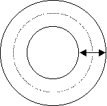
Figure 1 The circle is modulated between two different radii.
This is implemented by the following Csound code.
asin1 oscil krad1, kfqc, 1 ; Y component of circle radius 1 acos1 oscil krad1, kfqc, 1, .25 ; X component of circle radius 1 asin2 oscil krad2, kfqc, 1, .5 ; Y component of circle radius 2 acos2 oscil krad2, kfqc, 1, .75 ; X component of circle radius 2 ax1 = asin1+.35 ; Offset the circle centers a bit ay1 = acos1-.80 ; so the waves are assymmetrical. ax2 = asin2+.5 ay2 = acos2-.20
The surface traced by this orbit uses the equation
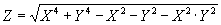 (1)
A graph of this surface is presented in figure 2.
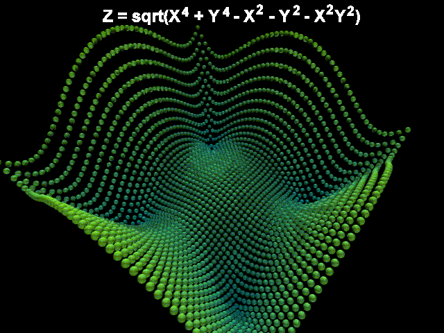 Figure 2 The terrain bass surface plotted with spheres.
The following Csound code is used to generate this surface. The audio variables ax and ay are used for the X and Y values of the surface. The values of X2 and Y2 are calculated in advance to make the algorithm more efficient. Separate values are generated for the left and right audio channels.
; Compute X^2 and Y^2 in advance to save time axsq1 = ax1*ax1 aysq1 = ay1*ay1 axsq2 = ax2*ax2 aysq2 = ay2*ay2 ; Compute the surface az1 = sqrt(axsq1*axsq1+aysq1*aysq1-axsq1-aysq1-axsq1*aysq1+1) az2 = sqrt(axsq2*axsq2+aysq2*aysq2-axsq2-aysq2-axsq2*aysq2+1)
Mathematical surfaces are not always well behaved when the values generated by the surface are translated into sound. Polynomials tend to shoot off to very large values and many surfaces are not centered around the zero axis. This can result in widely varying amplitudes and large DC offsets. The balance opcode can be used to reduce the amplitude variation. A high pass filter, butterhp, with a low cut-off frequency can be used to remove the DC component of the signal. This is implemented as
abal1 balance az1, aamp1 ; Balance the signal abal2 balance az2, aamp1 ; Balance the signal aout1 butterhp abal1, 10 ; DC blocking filter aout2 butterhp abal2, 10 ; DC blocking filter outs aout1*kamp, aout2*kamp ; Stereo output
The completed terrain bass instrument has a mysterious fluttering character.
In this instrument a rose curve is used to generate the orbit.2 Rose curves are generated by equation 2.
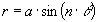 (2)
where a is the amplitude of the orbit and n determines the number of petals on the curve. If n is odd there will be n petals on the curve. If n is even there will be 2n petals on the curve. Figure 3 shows rose curves for several values of n.
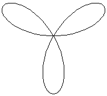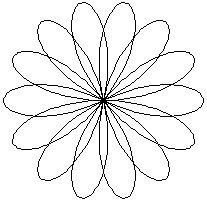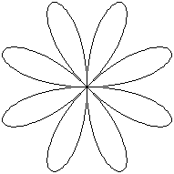
Figure 3 The rose patterns for n=3, n=3.5 and n=4.
The equation for the rose curve is expressed in polar coordinates. To convert to rectangular coordinates use equation 3.
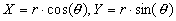 (3)
This is implemented in Csound as
arose oscil kmod1, ipetal*kfqc, 1 ; Rose Curve ax oscil arose, kfqc, 1 ; Convert from polar to ay oscil arose, kfqc, 1, .25 ; rectangular coordinates
In the Csound code the variable ipetal is used instead of n. The size of the rose is modulated with kmodl.
The surface used for this instrument is the polynomial3
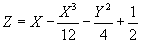 (4)
which is expressed in Csound as
az = ax-ax*ax*ax/12-ay*ay/4+.5 ; Compute the surface
A graph of this surface is presented in figure 4.
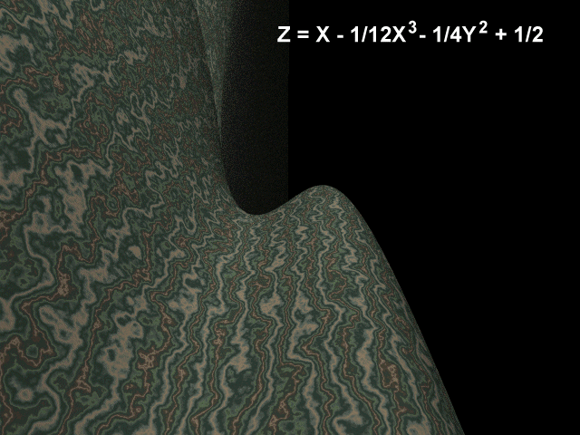 Figure 4 Terrain surface for the first terrain lead instrument.
Delayed vibrato is applied to the tone to make the sound more interesting. The tone produced by this instrument is rather mellow which pulses as the amplitude of the rose curve is modulated. This produces a "wah" sound similar to a that of a filter opening and closing.
This instrument uses a rose curve to generate the orbit as described in the previous section. The equation of the surface is
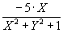 (5)
and an of this surface image is presented as figure 5
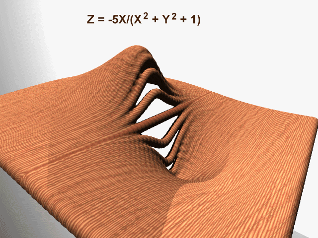 Figure 5 Terrain surface for the terrain hollow lead instrument.
The Csound code to implement this follows:
arose oscil kmod1+1, ipetal*ifqc, 1 ; Rose Curve ax oscil arose, ifqc, 1 ; Convert from polar to ay oscil arose, ifqc, 1, .25 ; rectangular coordinates az = -5*ax/(ax*ax+ay*ay+1) ; Compute the surface for oscillator 1
Three oscillators are generated which are detuned and added together to produce a rich, chorused hollow tone.
This instrument is based on a four dimensional surface. The orbit follows a three dimensional spiral along the surface of a torus. The orbit is shown in figure 6.
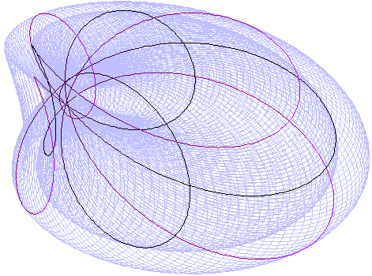 Figure 6 The dark line shows the orbit spiralling along the "torus" surface. Notice that since the minor radius was chosen larger than the major radius the torus tunrs in on itself. The orbit produced is fairly complex.
The Csound code for the torus is
krminor oscil 5, .2, 1 ; Modulate the minor radius krminor = krminor+6 ; Make it positive krmajor = krminor+1 ; Major radius is 1 bigger than minor asin1 oscil krminor, ifqc, 1 ; Minor circle Y coordinate acos1 oscil krminor, ifqc, 1, .25 ; Minor circle X coordinate asin2 oscil krmajor, ifqc/4, 1 ; Major circle Y coordinate acos2 oscil krmajor, ifqc/4, 1, .25 ; Major circle X coordinate ax = asin1+acos2 ; This orbit is a spiral on ay = acos1 ; the surface of a torus whose az = asin2 ; radius is being modulated.
Displaying the four dimensional surface presents some difficulties therefore the three dimensional analog of the surface is displayed. The surface produces a deep, growling, harmonically rich tone. The equation for this surface is
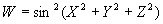 (6)
A graph of the surface is presented in figure 7.
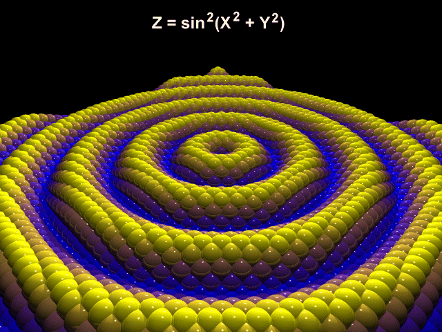
Figure
7
The three dimensional analogue of the four dimensional terrain
surface.
The Csound code for the four dimensional surface is
aw1 = sin(sqrt(ax*ax+ay*ay+az*az)) ; Compute the surface a bumpy 4D surface aw = aw1*aw1-.5 ; Remove some DC offset
This instrument makes use of planar rotations to modulate the sound. Rotations can be applied to any multi-dimensional oscillator such as a terrain oscillator. The equations for rotating a point in space are well known in computer graphics. They are best expressed as a matrix which is used to multiply each point. To simplify things the two dimensional case will be described first. For the two dimensional case
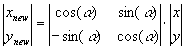 (7)
or
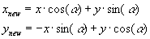 (8)
There are three planar rotations for the three dimensional case given by the following matrices:
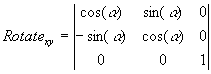 (9.a)
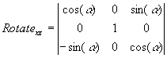 (9.b)
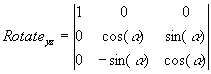 (9.c)
Since a four dimensional surface is used in this case a four dimensional rotation is applied. There are six planar rotations available in four space:
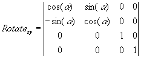 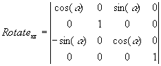(10.a & 10.b)
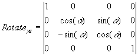 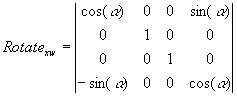(10.c & 10.d)
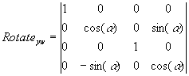 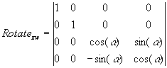(10.e & 10.f)
The Csound code to implement rotations of four dimensional equations follows:
kcost oscil 1, ifqc, 1, .25+iphase ; Cosine
ksint oscil 1, ifqc, 1, iphase ; Sine
ax zar inx ; Read in audio channels X, Y, Z and W
ay zar iny
az zar inz
aw zar inw
; Rotation in X-Y plane
if (iplane!=1) goto next1
axr = ax*kcost + ay*ksint
ayr =-ax*ksint + ay*kcost
azr = az
awr = aw
goto nextend
; Rotation in X-Z plane
next1:
if (iplane!=2) goto next2
axr = ax*kcost + az*ksint
ayr = ay
azr =-ax*ksint + az*kcost
awr = aw
goto nextend
; Rotation in Y-Z plane
next2:
if (iplane!=3) goto next3
axr = ax
ayr = ay*kcost + az*ksint
azr =-ay*ksint + az*kcost
awr = aw
goto nextend
; Rotation in X-W plane
next3:
if (iplane!=4) goto next4
axr = ax*kcost + aw*ksint
ayr = ay
azr = az
awr =-ax*ksint + aw*kcost
goto nextend
; Rotation in Y-W plane
next4:
if (iplane!=5) goto next5
axr = ax
ayr = ay*kcost + aw*ksint
azr = az
awr =-ay*ksint + aw*kcost
goto nextend
; Rotation in Z-W plane
next5:
if (iplane!=6) goto nextend
axr = ax
ayr = ay
azr = az*kcost + aw*ksint
awr =-az*ksint + aw*kcost
nextend:
zaw axr, ioutx ; Output audio X, Y, Z and W
zaw ayr, iouty
zaw azr, ioutz
zaw awr, ioutw
endin
The result is an evolving harmonically rich tone with a complex stereo image.
This instrument uses a limaçon curve to for the orbit as expressed by the polar equation
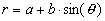 (11)
An image of this curve is presented in figure 8.
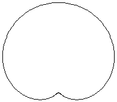 Figure 8 The limaçon orbit used in this instrument.
The Csound code used to implement this orbit follows
ka = .01+kmod ; Cardioid A kb = .1+kmod*.2 ; Cardioid B acardi oscil kb, ifqc, 1 ; Cardioid Curve ax oscil ka+acardi, ifqc, 1 ; Convert from polar to ay oscil ka+acardi, ifqc, 1, .25 ; rectangular coordinates
The surface used in this equation is presented in equation 12.
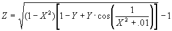(12)
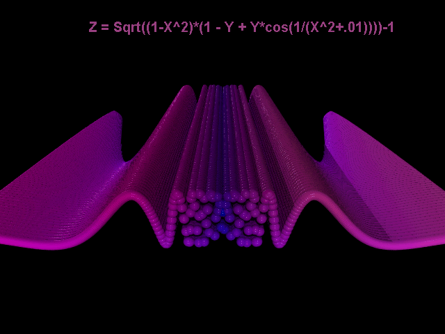
Figure
9
The pulsar terrain surface. As X goes to zero the frequency gets
very large due to the 1/(X^2+.01) term.
The Csound code to implement this surface follows:
az = sqrt((1-ax*ax)*((1-ay)+ay*cos(1/(ax*ax+.01))))-1 ; Compute the surface
This surface is derived from a surface including a term of the form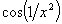. This causes the frequency to approach infinity as x approaches zero. To avoid computation errors this was modified to eliminate the unbounded term. The sound produced by this surface is a pulsing, noise like sound.
Terrain mapping synthesis provides a very rich playground for synthesists. Sounds generated using this method range from traditional waveforms and instruments to the most bizarre noises. Terrain mapping allows for a wide variety of modulations which can be used to add character and complexity to the tone. The tones produced can be tuned or untuned. Some disadvantages of this method are wide variations in volume and inherent DC offsets.
Interesting mathematical surfaces can be found in mathematics and computer graphics books. The rendered three dimensional images presented in this chapter were created with the Persistance of Vision ray tracer. A Perl script was used to generate the POV code. This script is presented as povplot.pl. Some of the diagrams of the orbits presented in this chapter were created with Logo. The code used to create them is included as rose.lgo.